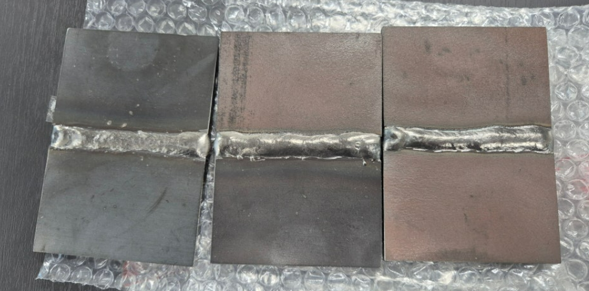
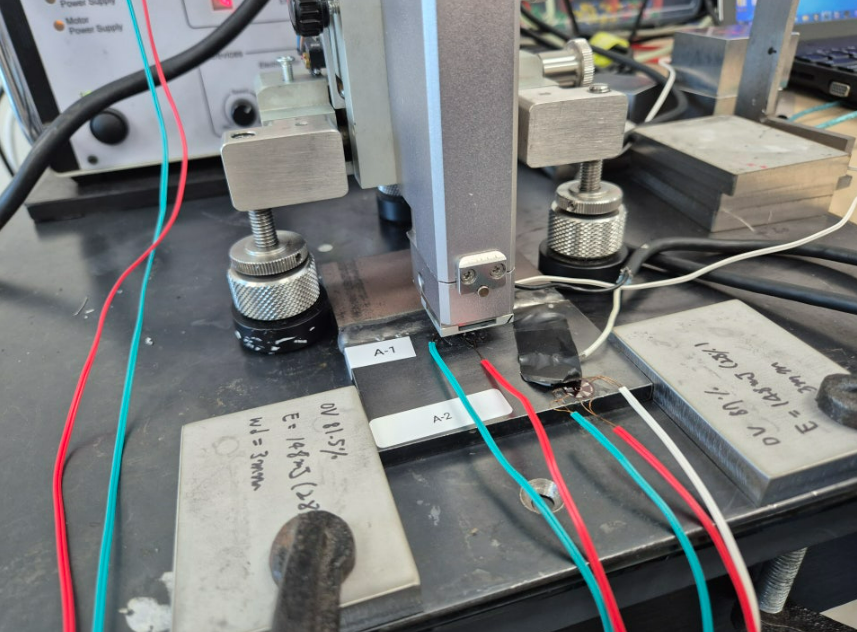
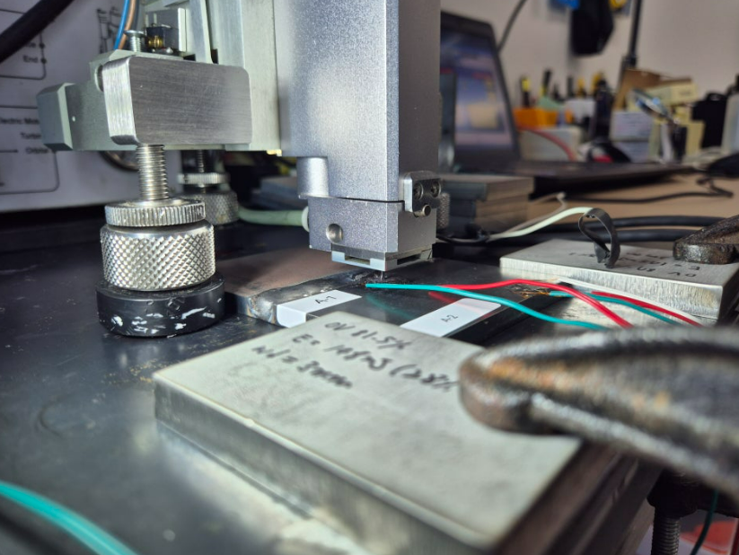
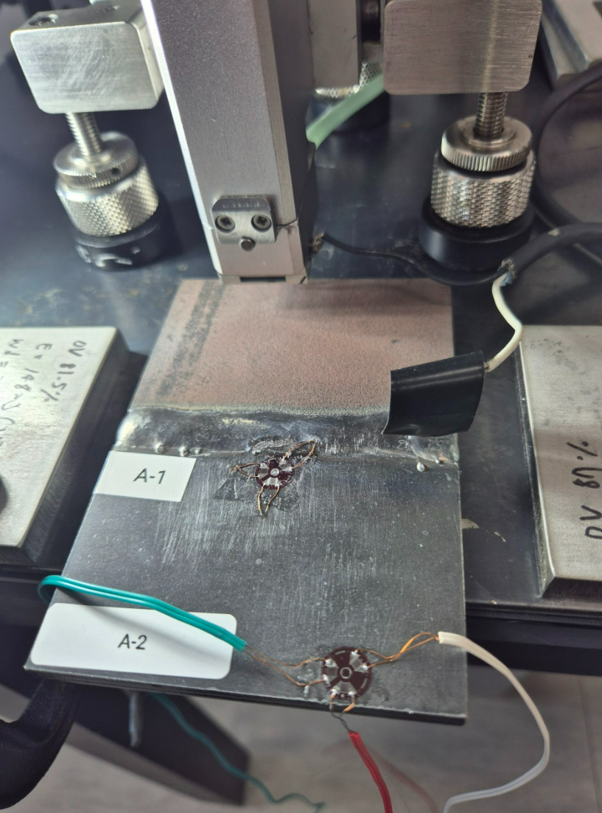

용접부 잔류응력 측정
발생 원인 · ASTM E837 분석
용접 시 불균일 가열·냉각으로 발생하는 잔류응력을 ASTM E837 홀드릴링법으로 측정합니다. 용접부 및 모재(HAZ 외부) 다중 포인트 측정으로 응력 분포를 전체적으로 파악하고, 피로균열·SCC 위험 부위를 정량적으로 평가합니다.
메커니즘
다중 포인트 측정
국제 규격 준용

ROOT CAUSES용접 잔류응력 발생 원인 3가지
용접 잔류응력은 용접 재료의 불균일한 가열 및 냉각 과정에서 발생합니다. 발생 메커니즘은 크게 세 가지로 구분됩니다.


온도 그라데이션
용접 중 금속이 국부적으로 고온 가열됩니다. 냉각 시 불균일하게 수축하면서 인장·압축 응력이 발생합니다. 용접 비드 근방에 인장 잔류응력이 집중되는 주요 원인입니다.
부피 변화
금속의 가열·냉각 과정에서 부피가 변화합니다. 더 빨리 냉각되는 부위는 더 큰 부피 감소를 경험해 내부 응력이 발생합니다. 두께 차이가 큰 이종 소재 용접 시 특히 두드러집니다.
야금학적 변화
용접 열에 의한 상(Phase) 변형이나 입자 성장 같은 미세구조 변화가 잔류응력을 유발합니다. 마르텐사이트 변태 등 상 변태가 수반되는 소재에서 두드러집니다.
⚠ 왜 측정이 중요한가: 용접 잔류응력은 시간이 지남에 따라 균열, 왜곡 및 조기 파손을 일으킬 수 있습니다. 용접 부품의 구조적 무결성과 내구성을 평가하려면 잔류응력 정량 측정이 필수적입니다.
MEASUREMENT POINTS측정 포인트 — 용접부 + 모재 비교
정확한 평가를 위해 용접부(용접 비드 위)와 용접부에서 떨어진 모재 지점을 각각 측정합니다. 두 지점의 잔류응력 분포를 비교해 용접 입열이 미치는 응력 영향 범위를 파악합니다.
- 용접부 측정 포인트 — 용접 비드 바로 위 또는 HAZ(열영향부). 용접 잔류응력이 집중되는 최고 응력 지점. 인장 잔류응력 크기 및 심도 파악.
- 모재 측정 포인트 — 용접부와 충분히 떨어진 위치. 용접 전 소재 응력 상태 및 용접 영향을 받지 않은 기준값 측정.
- 다중 포인트 비교 — 두 측정값을 비교해 용접 공정이 부여하는 추가 잔류응력 크기를 정량화. 후열처리(PWHT) 효과 검증에도 활용.
PROCESS측정 프로세스
시편 수령 및 확인
용접 시편 수령 후 상태 확인. 측정 위치 선정 및 사전 사진·영상 촬영. 용접 형상, 이음 방식, 소재 물성 정보 수집.
스트레인게이지 부착
HBM RY61 또는 TML FRS-2 잔류응력 전용 3축 로제트 게이지 부착. 최소 12시간 전 부착하여 접착제 완전 경화 후 측정 진행.
홀 드릴링 및 스트레인 측정
SINT MTS3000으로 Depth 1.00mm, 20 steps 점진적 천공. HBM MX1615 DAQ로 각 단계별 이완 변형률 정밀 수집.
EVAL 해석 및 성적서 발행
SINT EVAL로 ASTM E837-13 EXT Not Unif. Depth 1.00mm, Integral method, HDM method 해석. 깊이별 주응력 및 Test report 발행.
CASE STUDY실제 측정 사례
씨앤디테크가 수행한 용접부 잔류응력 측정 사례입니다. 용접 비드 위 게이지 부착, 홀드릴링 측정, 알루미늄 합금 용접부 EVAL 결과까지 전 과정을 수록합니다.






EQUIPMENT측정 장비 사양
| 잔류응력 측정 시스템 | SINT MTS3000 (이탈리아) |
|---|---|
| 데이터 수집 장치 | HBM MX1615 (독일) |
| 스트레인게이지 | TML FRS-2 / HBM RY61 잔류응력 전용 3축 로제트 |
| 해석 소프트웨어 | SINT EVAL (ASTM E837 전용) |
| 해석 방식 | ASTM E837-13 EXT Not Unif. Depth 1.00mm, 20 steps |
| 알고리즘 | Integral Method + HDM Method |
| 측정 규격 | ASTM E837 (홀드릴링법 국제 표준) |
| 측정 형태 | 시편 수령 측정 / 현장 방문 측정 모두 가능 |
APPLICATIONS적용 분야
SERVICE측정 용역 및 장비 공급
ASTM E837 기준 성적서 발급
용접부·모재 다중 포인트 비교 분석
사진·영상 촬영 및 측정 보고서 제공
HBM DAQ 시스템
HBM / TML 잔류응력 전용 게이지
설치·교육·유지보수 지원
FAQ자주 묻는 질문
관련 기술 자료 더 보기:
용접부 잔류응력 측정 문의
용접부 잔류응력 측정, 용접·모재 비교 분석, PWHT 효과 검증이 필요하시면 언제든지 문의해 주세요. 시편 수령 또는 현장 방문 측정 모두 가능합니다.